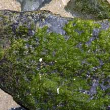
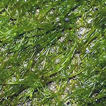
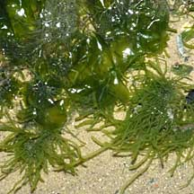
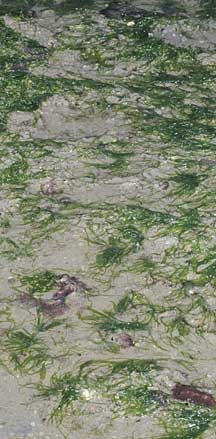
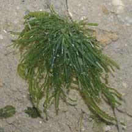
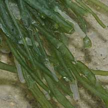
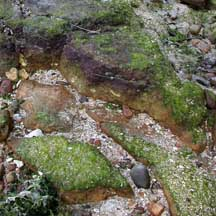
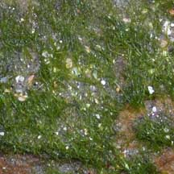

|
|
|
green
seaweeds text index | photo
index
|
| Seaweeds > Division Chlorophyta |
| Turf
green seaweeds Enteromorpha sp.* Family Ulvaceae updated Jan 13 Where seen? This bright green filamentous seaweed is commonly seen on many of our shores. The seaweed may dominate some shores at certain times of the year, to form a bright green furry, short-pile carpet over rocks and stones. Clumps are sometimes seen on sandy areas. Features: Clumps of flexible, translucent tubes about 3-8cm to 10cm long, 0.2-0.5cm in diameter. The tubes only branch at the base. Usually bright green. This seaweed grows abundantly in nutrient-rich waters. The seaweed is found pretty much throughout the world in all the oceans, estuaries and even some freshwater habitats. It is also among the organisms that commonly grow on ship bottoms, known as fouling organisms as they are considered a nuisance. Other members of the Family Ulvaceae can go through a stage in their life cycle where they resemble Enteromorpha. In fact, some scientists believe Linnaeus was right all along: that Ulva and Enteromorpha are actually the same genus. According to AlgaeBase, there more than 90 current Enteromorpha species. Identification of the species is difficult because the internal and external features used to distinguish among the species can vary with age, salinity, nutrient level, amount of sunlight, wave and tidal exposure. Human uses: Some species are eaten by people, the fine mossy ones used to garnish dishes in Japan and some parts of China. They are also used as animal feed, fertiliser and as medicine for their antibacterial properties. |
 Coats rocks in a furry carpet. Tanah Merah, Jul 05   Sheets of Ulva with filamentous Enteromorpha |
|
 Changi, Feb 10 |
 Chek Jawa, Mar 02  |
 Chek Jawa, Mar 02  |
Turf green seaweeds on Singapore shores
| Photos for free download from wildsingapore flickr |
*Species are difficult to positively identify without close examination of internal parts.
On this website, they are grouped by external features for convenience of display.
| Enteromorpha
species recorded for Singapore Pham, M. N., H. T. W. Tan, S. Mitrovic & H. H. T. Yeo, 2011. A Checklist of the Algae of Singapore.
|
Links
|
|
|